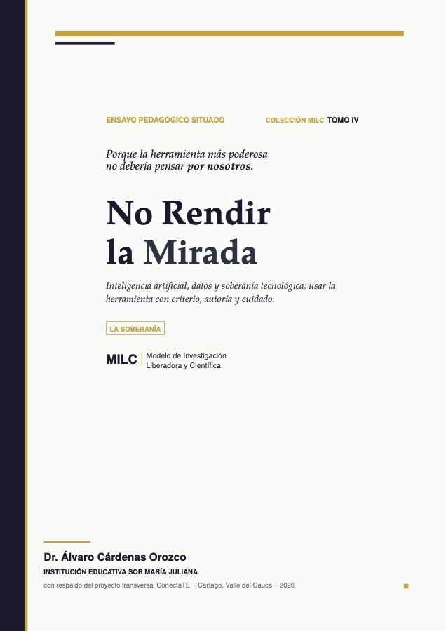

01IA aplicadaEducación
Escritura Inversa 82 libros escritos con IA
82libros escritos por estudiantes de 11.º

- El reto
- Los estudiantes ya usaban la IA para producir textos que no leían. Prohibirla no servía: había que convertirla en un ejercicio de criterio.
- Lo que se hizo
- Cada estudiante generó con IA los segmentos de un libro y, antes de ensamblarlos, tuvo que leerlos críticamente para comprobar que se sostuvieran entre sí. El error de ensamblar sin leer se volvió material de clase: se ve en la incoherencia del resultado.
- El resultado
- 82 libros terminados en un periodo. La experiencia se documentó como caso en el Tomo IV de la Colección MILC, «No Rendir la Mirada».